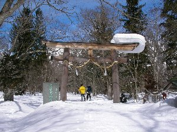
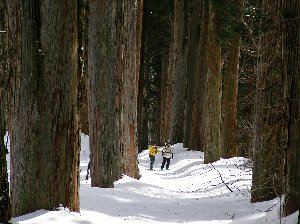

戸隠スノーシュー | ２００５年３月 |
|---|---|
| 最近のブームに乗った訳ではないのだが、前から興味の有ったスノーシューを購入。是非とも試し履きをしたくて、のびちゃんと友人Ｍと共に、戸隠スキー場へ向かった。 三月も後半に差し掛かっていたので、雪の有無が心配されたが、運良く直前に雪が降ったので申し分ない状態となりました。 1日目 朝、静岡をのんびりと出発。お昼に戸隠に到着なので、お昼は早速戸隠蕎麦！ と、言う事なのだが、既に飯綱高原で腹が減り、飯綱の蕎麦屋に入った。街道沿いに面している店で、大きくは無いが、静岡の普通の蕎麦屋並みの店舗。二八蕎麦や、十割蕎麦、田舎蕎麦、等とメニューは豊富。私は二八ざる蕎麦（750円）を注文。 これが美味い！ 値段がちょっと高めかも知れないが、絶品です。他メンバーは暖かい山菜蕎麦とキノコ蕎麦だったかな？を注文していたが、それも美味かったと言う事です。 店の名前を確認してこなかったので、なんてお店か分かりませんが、長野市内からバードラインを戸隠方面へ行き、飯綱あたりで最初に右手に出てくる蕎麦屋です。知っている方居ましたら、名前を教えて下さい。 さて、友人Ｍのスノーシューをスキー場でレンタルし、スキー場のリフトを使って戸隠スキー場山頂怪無山まで行きました。当然ここまではスキーヤーでも来られる場所です。 | |
 怪無山 山頂 |  ゲレンデ隣の雪原 |
| 本日は天気もよく、遠くの町並みや、戸隠山までハッキリと見えます。山頂の雪はキュッキュッと鳴るぐらいに乾燥雪で状態も良い。 レンタル屋のオヤジ曰く、ここからゲレンデコース外を歩くなら、ガイドを付けろ！と言われていたが、上からコースを確認し、それほどゲレンデコースから外れない（でもゲレンデ見えない位）林の中を突き進みます。えー、その位やりますよ。当然です。 雪がふかふかで、スノーシューでもある程度埋まりながら、斜面を降りていく気持ち良さ！ 滑っても転んでも、痛くない！ 斜面をわざとケツで滑ってみたりすると、大きく開けた雪原へ出ます。そこは平らで野球場がすっぽり入るぐらいの雪原です。遠くに戸隠山が見える絶好のロケーションです。 「あー、ここでコーヒー沸かしたら美味いだろうな〜、でも今日はバーナー忘れちゃった〜」 その後はゲレンデに復帰し、ゲレンデ脇を下ったり、リフト下を下ったりして、夕方には駐車場に到着。本日の宿「ヒュッテこぶし」に向かいました。 | |
 結構斜度有るでしょう |  奥社鳥居にて |
| ２日目 今日も天気は良い。少し薄曇程度。 本日は戸隠神社（と、言うと思うのだが、地図では奥社）を参拝し鏡池へ向かう、どちらかと言うと平坦なコース。メジャーなコースらしく、多くのスノーシューやクロスカントリースキーの人が居ます。 戸隠奥社入口に車を置き、参道をスノーシューで歩いていきます。途中には大きな杉並木があり、まるで我々が小さくなったような感じさえします。本殿まで行く頃には、雪はかなり深くなっており、鳥居が半分以上埋まっています。バックに雪を頂いた戸隠山が見え、圧巻です。 気温も高くなってきて、私は中着を一枚脱ぎ、手袋を外しました。 本殿から鏡池までは、林の中を歩いて行きます。所々にコースの案内が有るので、道に迷うことは有りません。 程なく、池全体が氷に覆われた鏡池に到着しました。雪で真っ白になった池は、上をスノーシューで歩くことが出来ます。後ろの雪山と一緒になって、今回二度目の絶好のロケーションです。 のびちゃん持参のクッキーを食べ、写真をバシバシ撮りました。ここでキャンプも良いですね〜 なんか縦笛吹いている人も居たりして。あー、絵を書いている人も居ますね。 名残惜しさも有りましたが、重い腰を上げ、今度は中社まで歩きます。本来ならスノーシューコースが有ると、ガイドマップには書いてあるのですが、一向に道が見つかりません。仕方なく、しばらく林道を歩きました。その林道も、誰も歩いた跡が無く、少し心細くなりますが、ガイドマップにも載っている道なので、当初の目的地とは行かないまでも無事にたどり着くことは出来ます。いや、出来るはずです。 | |
|  奥社への道 大きな杉でしょう |  鏡池 この下池なんですよ |
| 林道を途中まで来ると、道標が林の方を差して「中社」と有ります。しかし、どう見ても道は無く、方角的に「こっちが中社」位にしか見えません。 しかし、ここで負ける訳には行かないのです！（何に？）我々は行かねばなりません！ そこで、我々は道無き道を歩き始めたのです。これぞスノーシュー！ 斜めに歩くのが、ちょっと辛いが、木々の間を縫って突き進みます。 それでも登るのは面倒くさかったので、等高線的に、同じ高さをうねうねと、ちょっと登って、ちょっと下ってを繰り返し、沢に沿って歩いたりして、小１時間歩いた頃、前方に建物が見えました。 やっと、人家がある所に到着。やれやれと、道路に出て道標を見ると、今来た方向に「鏡池４㎞」と書いてあります。 ・・・・・・・・・道、合ってたのか。それとも出たところが偶然なのか。しかし、途中には獣道らしき所も無かったが。 偶然にも、中社目の前に到着。 近くの蕎麦屋兼お土産屋で昼飯の蕎麦を食べましたが、昨日ほど美味しくない。普通の蕎麦屋。やっぱ、観光客相手の店はこんなものか。 適度な疲労を残し、一泊二日の戸隠スノーシューは幕を閉じたのでした。宿の手配から、スノーシューのレンタルまで、色々とサンキューでした、のびちゃん。車出してくれてサンキュー、Ｍ。 | |
 同じく鏡池 |  中社に続く道無き道 |
| コメント＆写真 ｂｙ べっしー | |